This package contains blocks to combine and extract signals.
| Name | Description |
|---|---|
| 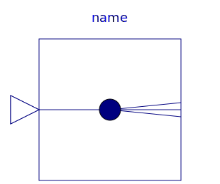 Replicator | Signal replicator |
| 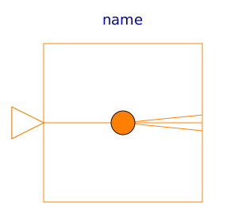 IntegerReplicator | Integer signal replicator |
| 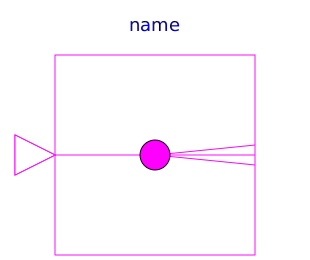 BooleanReplicator | Boolean signal replicator |
| 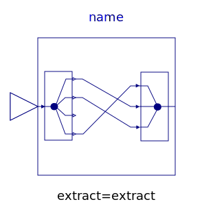 ExtractSignal | Extract signals from an input signal vector |
| 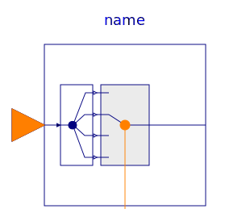 Extractor | Extract scalar signal out of signal vector dependent on IntegerRealInput index |
| 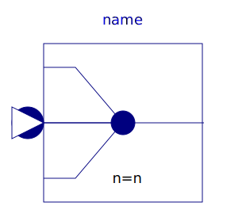 Multiplex | Multiplexer block for arbitrary number of input connectors |
| 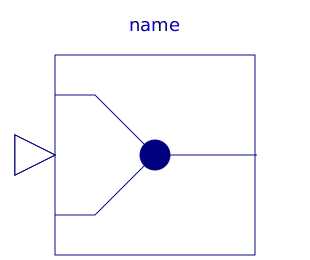 Multiplex2 | Multiplexer block for two input connectors |
| Multiplexer block for three input connectors | |
| 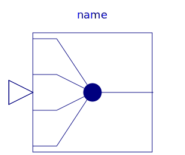 Multiplex4 | Multiplexer block for four input connectors |
| 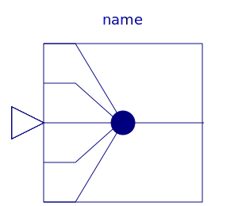 Multiplex5 | Multiplexer block for five input connectors |
| 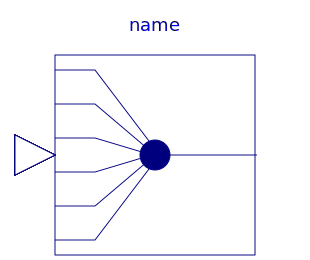 Multiplex6 | Multiplexer block for six input connectors |
| 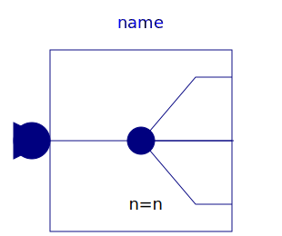 DeMultiplex | DeMultiplexer block for arbitrary number of output connectors |
| 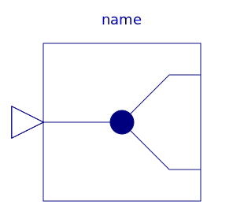 DeMultiplex2 | DeMultiplexer block for two output connectors |
| 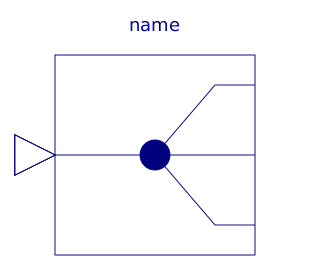 DeMultiplex3 | DeMultiplexer block for three output connectors |
| DeMultiplex4 | DeMultiplexer block for four output connectors |
| 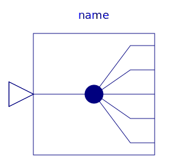 DeMultiplex5 | DeMultiplexer block for five output connectors |
| DeMultiplexer block for six output connectors | |
| Pass a Real signal through without modification | |
| 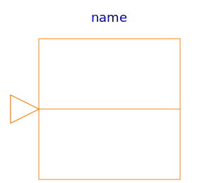 IntegerPassThrough | Pass a Integer signal through without modification |
| 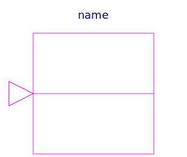 BooleanPassThrough | Pass a Boolean signal through without modification |